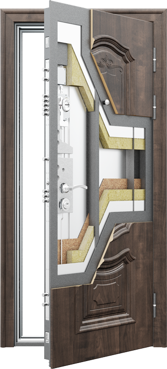
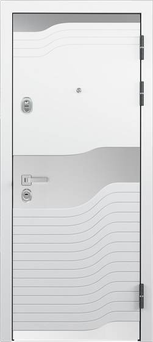
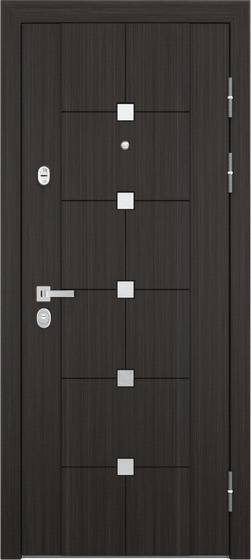
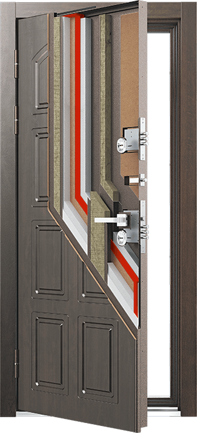
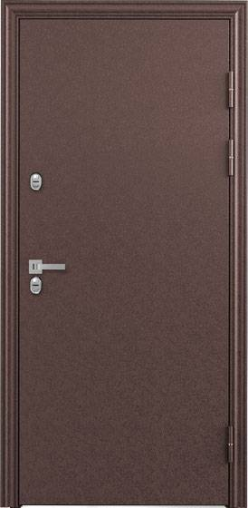
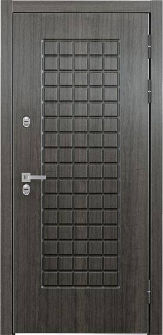

Каталог стальных дверей Torex
|
 PROFESSOR 4 Флагман модельного ряда Torex. В этих дверях применены лучшие технологии и решения для стальных дверей пр-ва Torex. Всё лучшее для Вас!Усиленная конструкция! Гранитобетонная вставка, три гиба жесткости по торцу полотна и короба, защитно -декоративные вставки из нержавеющей стали. Ваша дверь максимально защитная! |
  |
|
 SNEGIR Разработана специально для частного дома. 5 слоев утеплителей, 3 контура уплотнения, 3 контура примыкания, полотно толщиной до 118 мм, 3 слоя защитного покрытия всех металлических элементов. Уверенно противостоит холоду и коррозии!"Две двери в одной." Терморазрыв в полотне «делит» дверь на внешнюю и внутреннюю половины. Первая не пускает холод внутрь, вторая - удерживает тепло в доме. «Столкновение» температур и промерзание двери исключены! |
  |